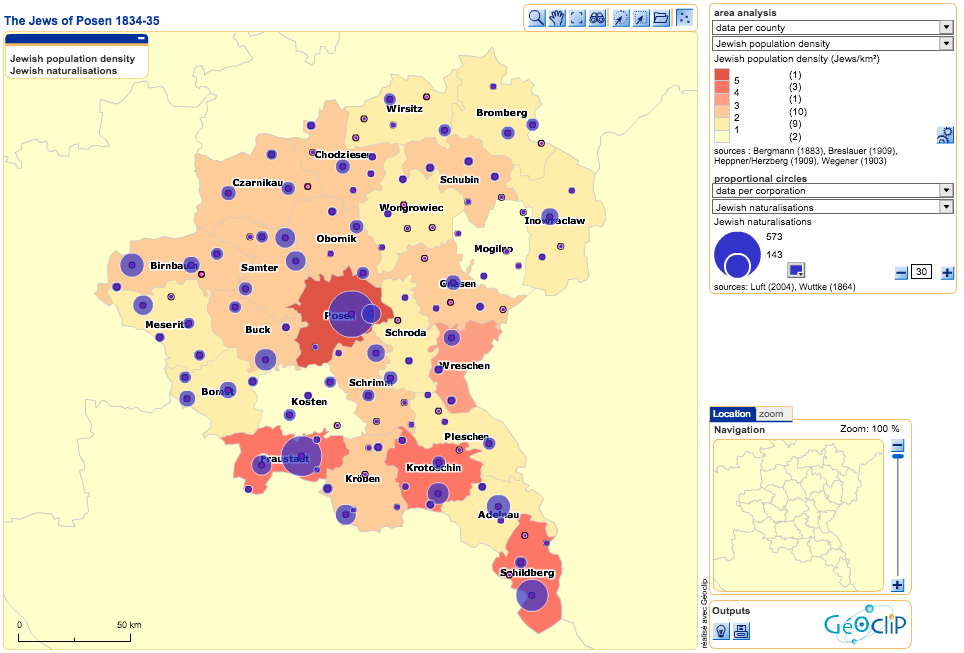

In 1836, Isidor (Isaac) Hirschberg published lists of all naturalised Jews in the Prussian province of Posen. This included profession, place of residence and naturalisation date. As non-citizenship bore economic constraints, these lists offered every businessperson a reference to identify which Jews were citizens.
At this time, the province of Posen was a border area, most of which had only been acquired by the Prussians since the mid-18th Century. With a mix of German and Polish speakers, the majority of place names were Germanised versions of the original Polish name. In the absence of standardised orthography and influenced by pronounciations in local dialect, this often lead to spelling variations in historical sources.
A recompiled 1987 edition of Hirschberg's data forms the basis of this case study. It aims to provide an insight into ethnicity, social class, economic structure, as well as comparisons between the naturalised and foreign Jewish and non-Jewish populations.
To calculate a naturalisation rate, other statistical information covering the years 1834-35 needed to be included, namely total and Jewish population per county or per corporation. Because there are no reliable and consistent statistics for this time period, data was proportionally interpolated from years in which population numbers had been surveyed. It was assumed that Jewish population equates congregational membership, with a Jewish corporation being a religious administrative area, comprising one or more individual congregations.
As the counties also vary in size, the population data required normalisation: the size of the county was put in relation to the number of Jews to give a more representative picture of population numbers. The naturalisation rate represents the total Jewish population in relation to the number of naturalised Jews.
The map will open in a separate window, it was made using Shockwave Flash and may not be mobile-friendly. © 2009
Eugen von Bergmann (1883): Zur Geschichte der Entwickelung deutscher, polnischer und jüdischer Bevölkerung in der Provinz Posen seit 1824. published in: Beiträge zur Geschichte der Bevölkerung in Deutschland, vol. 1, Verlag H. Laupp, 365 pages.
Bernhard Breslauer (1909): Die Abwanderung der Juden aus der Provinz Posen. Denkschrift im Auftrage des Verbandes der Deutschen Juden; Berlin, 19 pages.
Aron Heppner & Isaac Herzberg (1909): Aus Vergangenheit und Gegenwart der Juden und der jüdischen Gemeinden in den Posener Landen; Koschmin-Bromberg-Breslau, 224 pages.
Edward D. Luft (2004): The Naturalized Jews of the Grand Duchy of Posen in 1834 And 1835; 2nd edition, New Haven (CT), 308 pages.
Statistisches Handbuch der Provinz Posen (1865). Verlag Louis Türk, 144 pages.
Leo Wegener (1903): Der wirtschaftliche Kampf der Deutschen mit den Polen um die Provinz Posen; Joseph Jolowicz Verlag, Posen, 321 pages.
Heinrich Wuttke (1864): Städtebuch des Landes Posen; Verlag Fries Hermann, 472 pages.